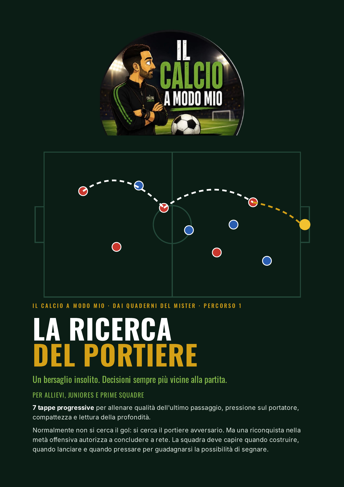
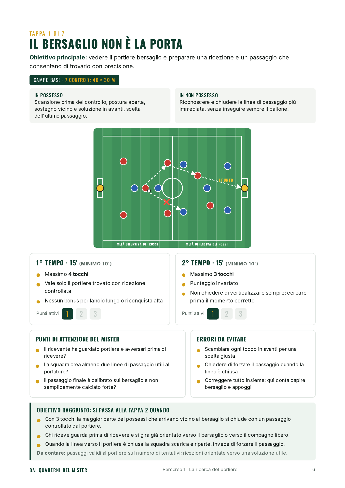

Se corri solo tu,
hai già perso.
7 tappe per insegnare alla squadra a pressare insieme, dalla più facile alla più difficile.
Quattro comportamenti. Una sola progressione.
Obiettivo, campo, schema, punti di attenzione del mister, errori da evitare e quando passare alla tappa successiva.
Le regole complete le trovi nel PDF.
